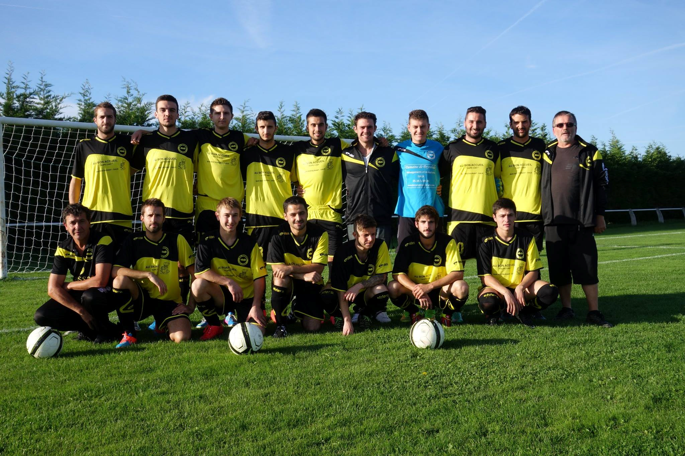
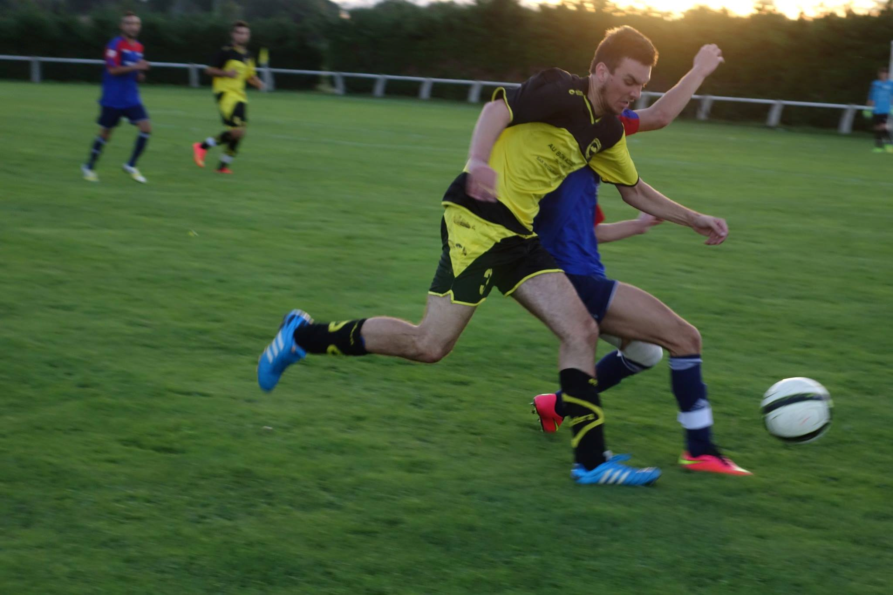
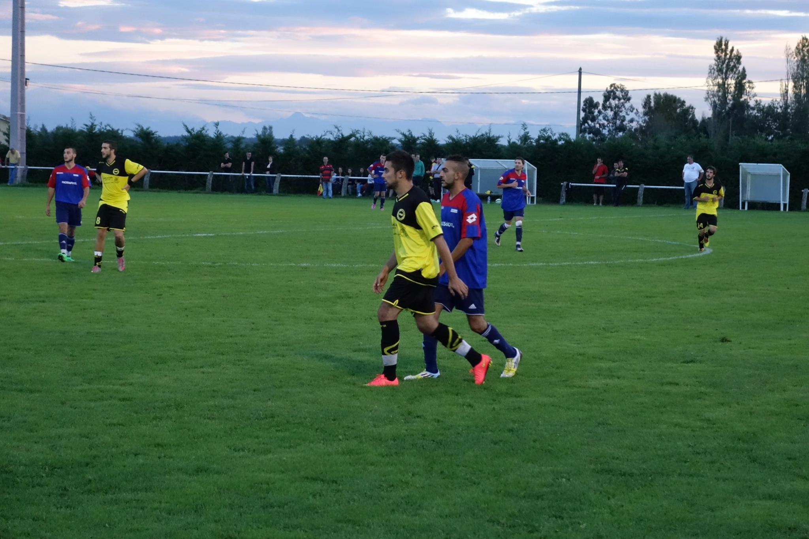

Taoupats - ASPTTPar Dédé
Bonjour à tous ! Nous sommes le samedi 11 octobre et nous nous retrouvons pour la 5ème journée de championnat. Voici la composition des Taoupats
Gardien : Rémy Défenseurs : Maxime S. – Maxime D. – Olivier (C) – Doui Milieux : Jordan – Alexy Paul – Edouard – Julien G. Attaquant : Mickaël Remplaçants de luxe : Igor, Pierre, Gaëtan
Après 3 victoires consécutives en championnat, les Taoupats, troisième de la poule, vont essayer de remporter un quatrième succès d’affilé à la maison, pour inaugurer leurs nouveaux maillots.
Ils affrontent l’ASPTT Grand Toulouse 2, qui est 5ème de la poule, avec 2 victoires sur un large score (9-2 et 4-0) et 2 défaites.
A noter l’absence de 2 portugais sur 3 dans l’effectif, qui ont préféré s’amuser ailleurs en abandonnant leurs coéquipiers. Tony a donc décidé de faire grève du capitanat pour monter son désaccord. Olivier en profite pour s’emparer du brassard de capitaine, approuvé par les coaches (décision qu’il a pu voter à 50%). Le coup d’Etat n’est pas loin…
Comme d’habitude, pas de phase d’observation pour les Taoupats : suite à une faute sur Alexy, qui a enfin l’occasion d’exprimer tout son talent sur le champ, Maxime S., le latéral star des Taoupats, reconverti en 4 en l’absence de Dédé dans la charnière centrale, sert parfaitement Julien G., qui place remarquablement bien le ballon au fond des filet : 1-0 pour les Taoupats !!
Sept minutes plus tard, les Taoupats manquent l’occasion de faire le break : Maxime S., encore lui, profite d’une belle action collective pour déborder côté gauche, et centre pour Mickaël, qui rate sa frappe. Edouard récupère le ballon mais tire à côté. Quelle occasion !
A partir de là, les Taoupats vont mettre moins d’intensité dans le jeu. Il n’y a que très peu de phases de jeu construites, et peu d’occasion, que Mickaël se charge de vendanger (c’est la saison du vinho verde).
Et les visteurs en profitent, puisqu’à la 32ème minute, ils récupèrent le ballon et lancent leur attaquant côté gauche, qui repique et trompe Rémy : 1-1.
Juste avant la mi-temps, l’ASPTT 2 a même l’occasion de prendre l’avantage, grâce à leur n°9, laissé seul par la défense jaune et noire. Il se présente en duel face à Rémy, qui cette fois se montre intraitable et sauve les siens.
De leur côté, les Taoupats ont une occasion également, sur un centre de Maxime S. pour Julien G., mais le gardien s’interpose. L’arbitre renvoie les joueurs aux vestiaires.
Les Taoupats reviennent en deuxième mi-temps avec de meilleures intentions, suite à une explication dans le vestiaire. Ils reprennent le jeu à leur compte, mais n’arrivent pas à conclure leurs occasions. L’ASPTT, de son côté baisse progressivement de régime, ce qui ne l’empêche pas pour autant de se montrer dangereux de temps à autre sur contre.
C’est finalement Maxime D. qui va libérer les siens à la 87ème minute. Sur corner, le ballon atterrit dans ses pieds. Avec tout son sang-froid et sa lucidité, il parvient à mettre le ballon au fond des filets : 2-1 ! Dans les tout derniers instants. Et c’est une belle récompense pour Maxime D., l’un des joueurs les plus utilisés par le staff des Taoupats. Lui qui a inventé ou plutôt réinventé le centre-tir, nous montre encore une fois qu’on peut compter sur lui quand c’est nécessaire !
Et le match s’arrêtera sur ce score de 2-1 ! Nouvelle victoire dans ce championnat pour les Taoupats, qui se défont d’un ennemi direct et conforte leur troisième place dans cette course folle au titre !